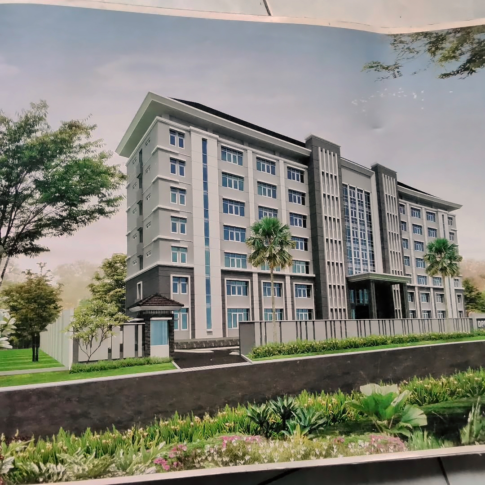
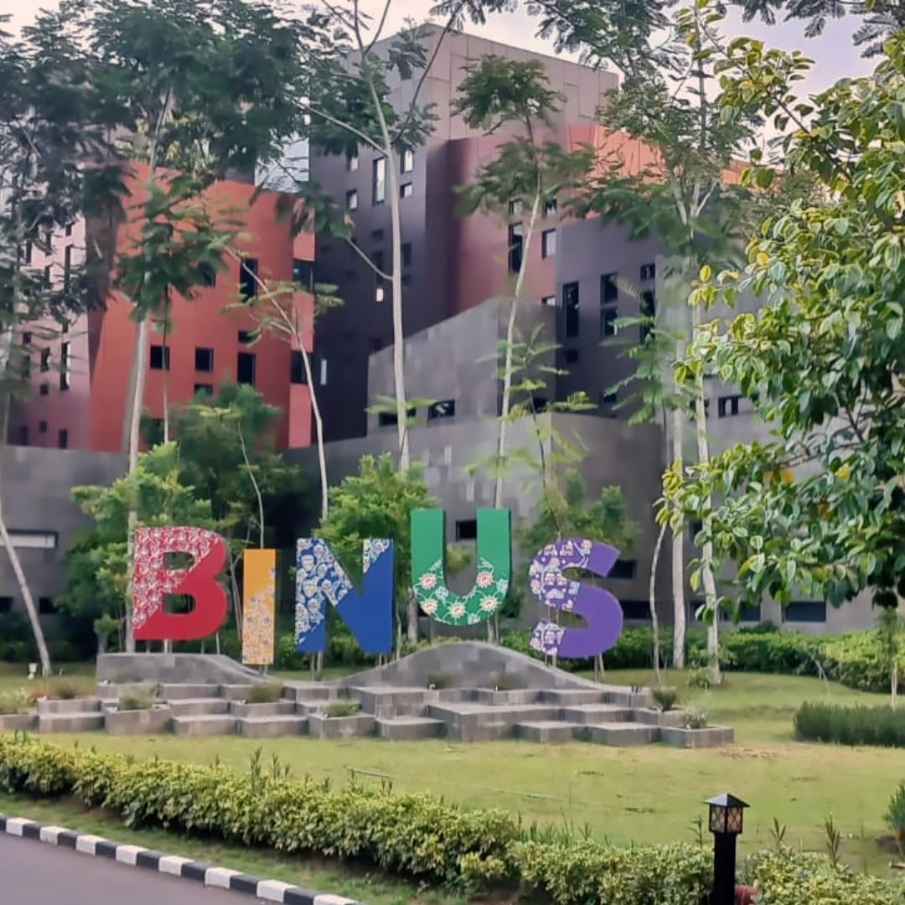
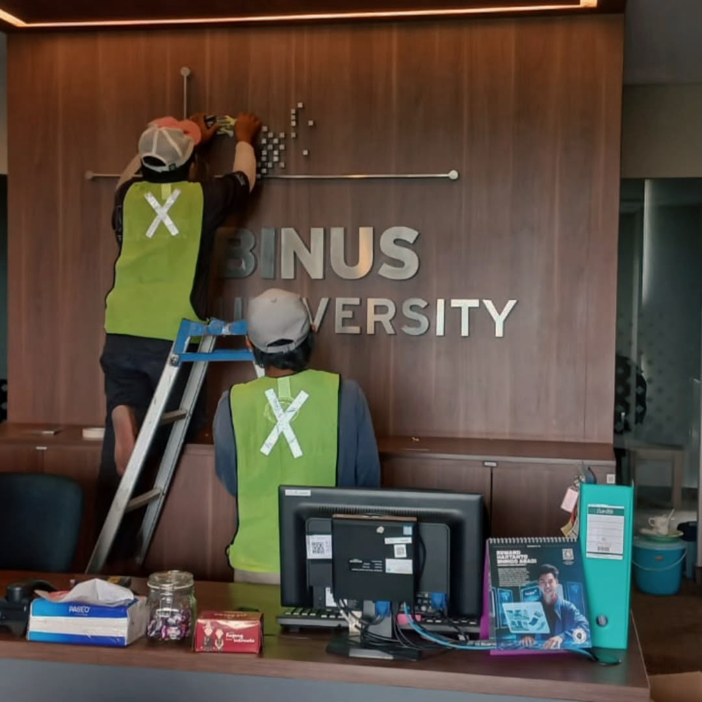

01 / 04ARSITEKTUR & BANGUN BARU
Bangunan bertingkat
Perencanaan dan pelaksanaan bangunan dengan karakter modern.
Diskusikan proyekIKONIK / PILIHAN PROYEK
Beberapa ruang dan bangunan yang merepresentasikan pekerjaan kami di Malang.

01 / 04ARSITEKTUR & BANGUN BARU
Perencanaan dan pelaksanaan bangunan dengan karakter modern.
Diskusikan proyek 02 / 04
02 / 04
KONSTRUKSI & GUDANG
Penataan struktur gudang dan area operasional konstruksi.
Diskusikan proyek
03 / 04ARSITEKTUR & RENOVASI EKSTERIOR
Pengolahan fasad dan lanskap untuk lingkungan komersial.
Diskusikan proyek
04 / 04INTERIOR & CUSTOM FURNITURE
Panel dinding kayu custom yang menyatu dengan kebutuhan ruang.
Diskusikan proyek